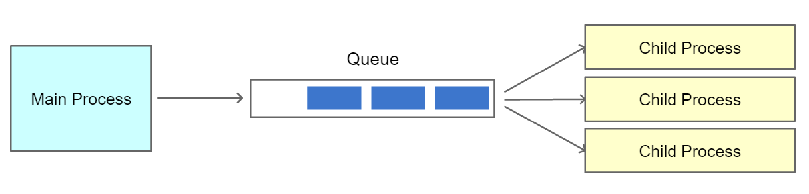

class: center, middle # IEMS 5703<br/>Network Programming and System Design ### Lecture 9 - MongoDB / <br/> Asynchronous Task and Message Queues #### Albert Au Yeung<br/>15th March, 2018 --- class: center, middle # MongoDB --- # What is MongoDB? - [MongoDB](https://www.mongodb.com/) - A **document-oriented** (NoSQL) database - Documents are stored in [BSON (Binary JSON)](http://bsonspec.org/) format - Highly optimized for retrieve and append operations - "Schema-less" - NO transactions, NO table joins - Read: [Introduction to MongoDB](https://docs.mongodb.com/getting-started/shell/introduction/) <br/> --- # MongoDB - The most popular NoSQL Database <center> </center> - Source: [https://db-engines.com/en/ranking](https://db-engines.com/en/ranking) --- # MongoDB Basics - A MongoDB server manages a set of **databases** - Each database have a set of **collections** - A collection have a set of **documents** - Compare with relational databases: - SQL: **database** --> Mongo: **database** - SQL: **table** --> Mongo: **collection** - SQL: **row** --> Mongo: **document** - SQL: **column** --> Mongo: **field** - Documents in the same collection do not have to have the same fields – Each documents are automatically assigned a unique key (`_id`) - **Indexes** can be added to fields to make search more efficient --- # MongoDB Basics - An example MongoDB document from a collection of courses ```javascript { "_id" : ObjectId("59e5851bdad7afd14c0e55c1"), "lecturer": "Albert AU YEUNG", "course_code": "IEMS 5703", "course_title": "Network Programming", "class_size": 50 } ``` --- # MongoDB Basics - A document may have nested structures, just like a dictionary in Python ```javascript { "_id" : ObjectId("59e5851bdad7afd14c0e55c1"), "lecturer": "Albert AU YEUNG", "course_code": "IEMS 5703", "course_title": "Network Programming", "class_size": 50, "students": [ { "student_id": 156748291, "last_name": "CHAN", "first_name": "Tai Man" }, ... ] } ``` --- # Using MongoDB - Available on Windows, Mac, Linux - Follow instructions on [https://docs.mongodb.com/manual/installation/](https://docs.mongodb.com/manual/installation/) - By default, the MongoDB server runs on **port 27017** - MongoDB comes with the [**mongo shell**](https://docs.mongodb.com/manual/mongo/), a command line interface in JavaScript for interacting with the MongoDB server - You can also choose to use a GUI client, such as [Robo 3T](https://robomongo.org/) - MongoDB provides API for **CRUD** (**Create**, **Read**, **Update**, **Delete**) operations --- # Create (Inserting Documents) - Insert can be done by using the `insert` command - (Assuming we are manipulating a collection named `courses`) - (Assuming we are using the mongo shell) ```javascript db.courses.insert( { lecturer: "Peter WONG", course_code: "IEMS 5888", course_title: "Advanced Networking", class_size: 50, } ) ``` --- # Read (Retrieving Documents) - Retrieve documents using the `find` command - Search conditions should be specified in a dictionary format - In the second argument, specify which fields should be retrieved ```javascript db.courses.find( { class_size: { $gt: 20 }, { course_code: 1, course_title: 1, lecturer: 1}, ).limit(10) ``` --- # Update (Updating Documents) - Update documents using the `update` command - First specify the condition, next specify the field to update ```javascript db.courses.update( { course_code: "IEMS 5799" }, { $set: { class_size: 40 } } ) ``` --- # Delete (Deleting Documents) - Delete documents using the `remove` command ```javascript db.courses.remove( { course_code: "IEMS 5678" } ) ``` - If no conditions are given, all documents in the collection will be deleted. --- # When Should We Use MongoDB? - MongoDB is actually very suitable for a lot of Web-based applications - Consider the case of developing a **photo sharing application** - Using relational database, you will have: - A **user** table - A **photos** table - A **comments** table - A **likes** table - Retrieving a photo involves joining all these tables (such that we can get the name of the user, the details of the photos, the comments by other users, and the number of likes received) - In MongoDB, we can use a single document to hold everything about a photo --- # When Should We Use MongoDB? - Example document of a photo sharing application ```javascript { "timestamp": "2018-03-10 14:30:20", "author": { "user_id": 72631982, "username": "albertauyeung", "nickname": "Albert" }, "photo_url": "http://...../photo.jpg", "comments": [ ... ], "num_likes": 67 } ``` --- # When Should We Use MongoDB? ### Benefits - All **related objects** are retrieved when retrieving a single photo (user, comments, likes) - No complex table **joins** required - A list of photos can be done with only **a single query** to the database - **No pre-defined schema**, new fields can be added to new records easily ### Limitations - **Redundant** information in each record - When something has been updated, **every record** may have to be updated --- class: center, middle # Interfacing with MongoDB in Python --- # Interfacing with MongoDB in Python - You can use the [PyMongo](https://api.mongodb.com/python/current/) package for interacting with MongoDB servers in Python - Installing: ```bash $ pip install pymongo ``` - Establishing a connection to a MongoDB: ```python from pymongo import MongoClient client = MongoClient('localhost', 27017) ... ``` --- # PyMongo - A reference to a database can be obtained using one of the following methods: ```python db = client.mydatabase # attribute style access db = client["mydatabase"] # dictionary style access ``` - A reference to a collection can be obtained using one of the following methods ```python courses = db.courses # attribute style access courses = db["courses"] # dictionary style access ``` --- # PyMongo - A document can be constructed using a dictionary in Python, and can be directly feed to the `insert_one` function ```python from pymongo import MongoClient client = MongoClient('localhost', 27017) record = { "lecture": "Albert", "course_code": "IEMS 5703", "course_name": "Network Programming" } client.mydatabase.courses.insert_one(record) # No commit needed as there are no transactions in MongoDB ``` - For other operations, refers to the tutorial at [https://api.mongodb.com/python/current/tutorial.html](https://api.mongodb.com/python/current/tutorial.html) --- # Connection Pool in PyMongo - PyMongo's `MongoClient` instance automatically creates a connection pool per server (you can have replica servers running, see [https://docs.mongodb.com/manual/replication/](https://docs.mongodb.com/manual/replication/)) - By default, the size of the pool is `100`. You can change it by: ```python client = MongoClient(host, port, maxPoolSize=200) ``` - You only need to create the client **once** in each process. The client is **thread-safe** and can be shared among threads - Reference: [http://api.mongodb.com/python/current/faq.html#how-does-connection-pooling-work-in-pymongo](http://api.mongodb.com/python/current/faq.html#how-does-connection-pooling-work-in-pymongo) --- class: center, middle # Asynchronous Tasks --- # Client Server Architecture - So far we have been discussing the client-server architecture, in which there is an **explicit** connection / channel between the client and the server - Both sides would have to **wait** for the other side when they are engaged (i.e. they are dependent on each other until the connection is **terminated**) - E.g. In Assignment 2, the client needs to wait for the result from the server <center> </center> - This works well (and is even necessary) in many situations, but in some others this model can be problematic --- # Client Server Architecture - In some situations, the client **does NOT have** to know the result of its request to the server - The client simply wants to **trigger** the server to perform some tasks - Examples: 1. In a movie recommendation Website, client lets the server know that a user has rated a movie. The server will then trigger a process to **generate a new set of recommended movies** to the user. 2. In a news aggregation system, several components work together to create usable datasets in pipeline (see illustration below) <center> <img src="img/l8-news-system.png" width="95%"> <br/>System architecture of a new aggregation application </center> --- # HTTP Requests & Responses - In the case of **HTTP**, there is another problem: the **duration of one request-response** cycle - The HTTP request-response cycle is expected to complete in a short time (no one likes waiting!) - However, if some tasks on the server side take a long time to complete, and if the client does not need to know about the result, the task should **NOT** be executed within the **request-response** cycle - We need **asynchronous tasks** <center> <img src="img/l8-http-tasks.png" width="90%"> </center> --- # Asynchronous Tasks - **Asynchronous** tasks are tasks that are NOT executed synchronously within an established communication (**non-blocking** to the client or the requester) - Used in many scenarios, including: 1. Triggering a process that needs a long time to run 2. Triggering the process(es) in the next step in a data processing pipeline 3. Quickly return a response to the client, and allow the client to check for the result later - **Benefits**: 1. Not holding the other side **waiting** when it does not need to be notified of the result 2. Avoid establishing **an explicit connection** between two independent systems (**de-coupling**) 3. Avoid **errors** on the server side from hindering other processes on the client side --- # Asynchronous Tasks ### How can we execute tasks **asynchronously**? - This is like multi-threading / multi-processing on a different scale - In multi-processing, we create a **queue** to allow different parts of a system to notify each other of any update - E.g. in Assignment 2, a **queue** is used to let child processes know about new clients connected <center>  </center> - A similar **message queue** can be used between individual programs or compoenents --- # Message Queues - A **message queue** is a component that receives messages from some programs and deliver the messages to other programs - Message queues provide an **asynchronous communications protocol** for **inter-process communication** - The sender and receiver of the message do NOT need to interact with the message queue at the same time <center> <img src="img/l8-message-queue.png" width="55%"> <br/>Ref: https://docs.microsoft.com/en-us/azure/architecture/patterns/competing-consumers </center> --- # Message Queues ### Some **requirements** for message queues - Messages may have different **priorities** - Handle a **large number** of messages at the same time - Multiple programs (**producers**) may create the same type of messages - Multiple programs (**consumers**) may consume the same type of messages - Consumers may **crash** and failed to consume a message from time to time - ... --- # Usage of a Message Queue - When some tasks have to be executed **asynchronously**, an application server can submit messages to the message queue, and let workers execute tasks asynchronously - Free the HTTP request-response cycle from heavy tasks - Clients are shielded from failures of background tasks - If there is a failure, the message queue can make sure that the task is submitted again for retry <center> </center> --- # Advantages of Message Queues ### De-coupling System Components - Comparing to a client-server model, system components are now **loosely coupled** (i.e. independent of each other) - A message producer does NOT have to know whether any message consumer is running or not - **Failure** in one process will not easily propagate to other processes ### Increase Scalability - With a message queue, no clients are directly connected to servers. More clients or servers can be added to run **in parallel** when needed - Simpler **routing** between clients and servers - The message queue can **cache** messages, or route messages to less busy processes --- class: center, middle # Using Redis as for Publish/Subscribe --- # Redis - Redis is a key-value store, but can also be used as a simple message queue - Redis implements the [publish-subscribe pattern](https://en.wikipedia.org/wiki/Publish%E2%80%93subscribe_pattern) - **Publishers** submit messages to some **channels / topics** in Redis, not specifying which **Subscribers** will handle the messages - **Subscribers** express interest in one or more channels and only receive messages that are of interest - Ref: [Pub/Sub - Redis](https://redis.io/topics/pubsub) - Ref: [Python Redis Client](https://github.com/andymccurdy/redis-py) --- # Creating a Publisher - In Python, you can **publish** messages to a specific channel as follows: ```python from redis import StrictRedis # Get a connection to Redis queue = StrictRedis(host='localhost', port=6379) # Publish a message to a channel called testing message = "Hello World" queue.publish("testing", message.encode("utf-8")) # Note: It is a good practice to encode the message into bytes before sending out ``` --- # Creating a Subscriber ```python from redis import StrictRedis # Connect and subscribe queue = StrictRedis(host='localhost', port=6379) pubsub = queue.pubsub() pubsub.subscribe('testing') # The first message you receive will be a confirmation of subscription message = p.get_message() print(message) # prints {'pattern': None, 'type': 'subscribe', 'channel': 'testing', 'data': 1L} # The subsequent messages are those from the publisher(s) message = p.get_message() print(message) # prints {'channel': 'testing', 'data': 'Hello World', 'pattern': None, 'type': 'message'} ``` --- # Consuming Messages ### Message Format - **type**: One of the following: 'subscribe', 'unsubscribe', 'psubscribe', 'punsubscribe', 'message', 'pmessage' - **channel**: The channel (un)subscribed to or the channel a message was published to - **pattern**: The pattern that matched a published message's channel. Will be None in all cases except for 'pmessage' types. - **data**: The message data. With (un)subscribe messages, this value will be the number of channels and patterns the connection is currently subscribed to. With (p)message messages, this value will be the actual published message. --- # Pattern Matching Subscriptions - Instead of an explicit channel name, subscribers can also subscribe using **pattern-matching** mode - Pattern-matching subscriptions involve using **wildcard** character in the channel name ```python # A subscriber that subscribe to channels with the `news.` prefix queue = StrictRedis(host='localhost', port=6379) pubsub = queue.pubsub() pubsub.psubscribe('news.*') # The above subscriber will consumer messages published in the following publishers queue.publish('news.finance', 'Financial News 001') queue.publish('news.international', 'International News 001') ``` --- # Unsubscribing - When the subscriber no longer needs to consumer messages from the publishers, it should **unsubscribe** from the channel(s) ```python # The following will unsubscribe from the 'testing' channel pubsub.unsubscribe('testing') # You will also get a confirmation message after unsubscription message = p.get_message() print(message) # prints {'channel': 'testing', 'data': 1L, 'pattern': None, 'type': 'unsubscribe'} ``` ```python # The following will unsubscribe from ALL channels subscribed previously pubsub.unsubscribe() # The following will unsbscribe from a pattern-matching subscription pubsub.punsubscribe('news.*') ``` --- # Consuming Messages - `get_message()` will return **immediately** - If there is NO messages, it will return `None` - If there is a message available, it will return the message dictionary ### Three strategies of consuming messages: 1. Using an indefinite loop 2. Using the `listen()` function 3. Running an indefinite loop in a new thread --- # Consuming Messages (1) - The simplest way is to use an indefinite loop and handle messages when there is any ```python import time from redis import StrictRedis queue = StrictRedis(host='localhost', port=6379) pubsub = queue.pubsub() pubsub.subscribe('testing') while True: message = p.get_message() if message is not None: # Handle the message here # ... else: # Do other things # ... time.sleep(0.01) ``` --- # Consuming Messages (2) - If you program only needs to perform something when there is a message, you can use the blocking `listen()` function - If no message is published to the channel (i.e. no message is available to be consumed, the program will be **blocked**) ```python from redis import StrictRedis queue = StrictRedis(host='localhost', port=6379) pubsub = queue.pubsub() pubsub.subscribe('testing') for message in pubsub.listen(): # Do something with the message # ... ``` --- # Consuming Messages (3) - Finally, you can choose to run a loop in a new **thread**, such that your main thread can still work on other things - To use this option, you need to create a function, which will be invoked to handle a message when received ```python def handler(message): print(message['data']) pubsub.subscribe(**{'testing': handler}) thread = pubsub.run_in_thread(sleep_time=0.01) # Do other things in this main thread ... # Stop the thread before your program ends thread.stop() ``` --- # Broadcasting - Redis' PubSub mechanism is essentially a **broadcasting** mechanism - Messages from publishers will be sent to **ALL** subscribers connected at that time <center> <img src="img/l8-redis-broadcast.png" width="80%"> </center> - What if you only need **ONE** subscriber to receive and process the message? --- # Message Queue - In some scenarios, we have message **producers** that will create messages, each of which is only intended for one **consumer** - E.g. consider the case in Assignment 2, each client should only be handled by **one** thread. It does not have to be served by all child processes and threads at the same time - In other words, we need a proper **message queue** <center> </center> --- class: middle, center # Using Redis as a Message Queue --- # Using Redis as a Message Queue - The **PubSub** mechanism only broadcasts messages to all subscribers - We need another mechanism to implement a **FIFO** message queue - We can use the **list** data type in redis - **Producers** push message into a **list** (identified with a **key**) - **Consumers** pop message from the list - Redis operations are thread-safe, so multiple processes can issue commands at the same time --- # Implementing a Message Queue - Messages are pushed to a "channel" (which is a key in Redis) using `rpush()` (inserting element at the end of a list) - Messages are consumed by using `blpop()` (blocking) or `lpop()` (non-blocking) by the consumers - Once a message is retrieved, it is removed from the list - Pushing messages: ```python from redis import StrictRedis r = StrictRedis(host='localhost', port=6379) message = 'Message 1' r.rpush('channel_01', message.encode("utf-8")) # The message is now pushed into a list in redis under the key 'channel_01' ... ``` --- # Implementing a Message Queue - `blpop()` **blocks** until something is available in the list under the given key - Consuming a message: ```python from redis import StrictRedis r = StrictRedis(host='localhost', port=6379) while True: item = r.blpop('channel_01') print(item) # item is a tuple: (key, data) # the above prints (b'channel_01', b'Message 1') ... ``` --- # More About Redis - Sample programs: - PubSub: [pub.py](/lectures/files/pub.py), [sub.py](/lectures/files/sub.py) - Message queue: [pub_list.py](/lectures/files/pub_list.py), [sub.py](/lectures/files/sub_list.py) - Check the official documentation at [https://redis.io/documentation](https://redis.io/documentation) - A library called `hotqueue` implements a message queue over Redis:<br/>https://github.com/richardhenry/hotqueue - [The Little Redis Book](https://github.com/karlseguin/the-little-redis-book): a free book introducing Redis --- class: middle, center # Celery --- # Asynchronous Task - In the previous section, we use an explicit message queue (redis) between two processes - Sometimes, it might be easier for us programmer to focus on writing the logic of tasks, and treat the message queue as something **transparent** to the program - We simply want to have a task executed **asynchronously**, without having to worry about **producing** or **consuming** messages - In Python, we can use [Celery](http://www.celeryproject.org/), which is a task queue written in Python for Python applications - It allows implementation of asynchronous tasks to be more integrated into your Python application --- # Celery - A **distributed task queue** written in Python for Python applications - It has to be supported by a **message broker** (e.g. Redis or RabbitMQ) - Install via pip ```bash $ pip3 install Celery ``` - When using Celery, you create **worker processes** that will execute the asynchronous tasks --- # Example - Let's say you would have a task which takes time to complete, and you want to run it asynchronously - Firstly, you create the function that will run the task in a Python module as follows ```python import time from celery import Celery # Create a Celery app, providing a name and the URI to the message broker # Here we assume Redis is installed and running app = Celery('tasks', broker='redis://localhost') # Create a task using the app.task decorator @app.task def generate_squares(n): for i in range(n): print(i * i) time.sleep(1) # simulate a long running task ``` --- # Example - Execute a worker by using the follow command (assuming the above script is saved in a `tasks.py` file): ```bash $ celery -A tasks worker ``` - `-A` means that the application is defined in a script named `tasks`, `worker` means starting a worker process - You can also create **multiple processes** by using the `concurrency` argument. For example, the following will start 5 worker processes: ```bash $ celery -A tasks worker --concurrency=5 ``` --- # Example - Now, if in another Python program you need to execute the task asynchronously, you can simply do ```python from tasks import generate_squares # Use .delay to execute the Celery task asynchronously generate_squares.delay(100) ``` - The above script will terminate after the call to `generate_squares`, it will NOT wait until the function has terminated. - Effectively, the task is being carried out by the Celery worker, and this script is NOT blocked by the task --- # Keeping Track of Asynchronous Tasks - In many cases, you simply want to submit a task and are not concerned about the result - In other cases, you may want to **keep track** of the status of the task - For the latter case, Celery needs a **backend** storage to temporarily stores the states of the asynchronous tasks - In general we can also use **Redis** as the backend --- # Keeping Track of Asynchronous Tasks - When creating the Celery application, set the `backend` argument as well: ```python import time from celery import Celery # Create a Celery app, providing a name and the URI to the message broker # Here we assume Redis is installed and running app = Celery('tasks', broker='redis://localhost', backend='redis://localhost') # Create a task using the app.task decorator @app.task def generate_squares(n): for i in range(n): print(i * i) time.sleep(1) # simulate a long running task ``` --- # Keeping Track of Asynchronous Tasks - Once you have a backend, you can check the status of a task submitted: ```python import time from celery.result import AsyncResult from tasks import generate_squares result = generate_squares.delay(5) task_id = result.task_id result = AsyncResult(task_id) time.sleep(1.0) print(result.ready()) # False because the task is not finished time.sleep(5.0) print(result.ready()) # True because the task has finished print(result.result) # The return value of the task (None in this case) print(result.state) # The current state of the task ``` --- class: center, middle # End of Lecture 9